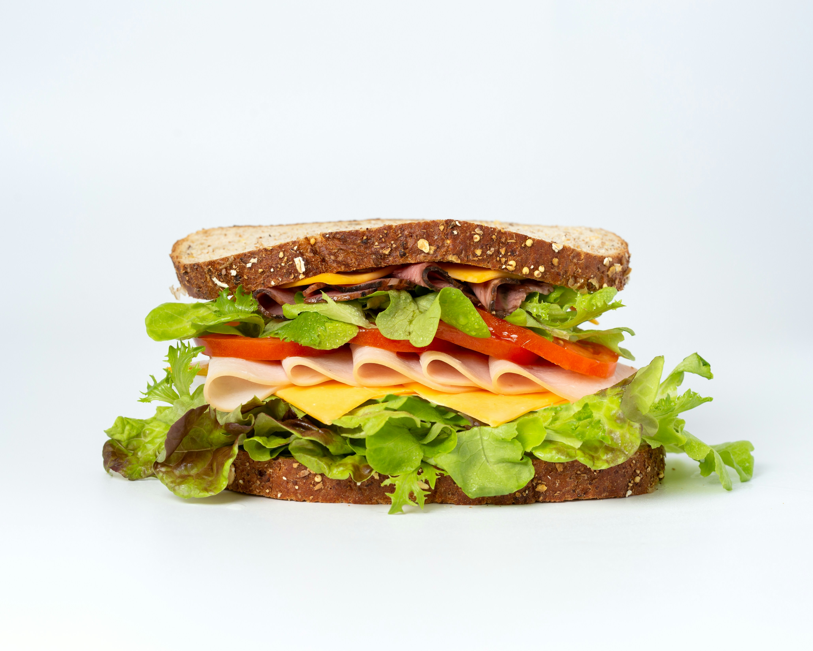

Sandwich

Description
Sandwich is also very famous even among old people.It is very easy to make and can be made quickly
Ingredients
- Butter both sides of each slice of bread
- Heat a pan over medium heat and lightly toast each side of the bread until golden.
- Add the cheese to one slice of bread.
- Top with the second slice of bread and cook for 2–3 minutes per side, until golden brown and the cheese is melted
Home